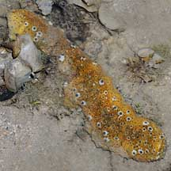
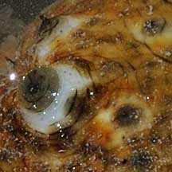
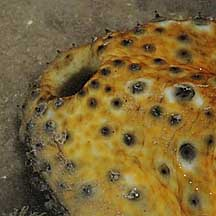
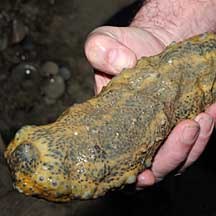
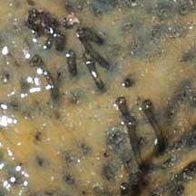

|
|
| sea cucumbers text index | photo index |
| Phylum Echinodermata > Class Holothuroidea |
| Eye-spotted
sea cucumber Stichopus ocellatus Family Stichopodidae updated Apr 2020 Where seen? This large yellow sea cucumber with little 'eye-spots' is sometimes seen near living reefs. Elsewhere, mostly in seagrasses on sandy or muddy-sand areas on reef flats and sandflats. According to Lane, it was known from Singapore for many years but was only described as a new species in 2002. Features: 15-20cm long. Body hard heavy, squarish in cross-section, blunt at the ends, with a wrinkled skin. Mostly yellowish brown with a pattern of 'eye-spots' that appear into 2-4 rows along the body length. 'Ocellatus' means 'having little spots' or 'marked with eyes'. These are not real eyes but comprise a large white bump with a dark tip. Distinct flat underside with many large tube feet with suckers appearing in three rows along the body length. The mouth is downward facing. Human uses: It is among the sea cucumbers harvested for food. Status and threats: This sea cucumber is listed as 'Vulnerable' on the Red List of threatened animals of Singapore. |
 Pulau Semakau, Mar 08 |
 White bump with dark tip |
 |
|
 Tube feet in three rows on the flat underside. |
 Slender tube feet. |
| Eye-spotted sea cucumbers on Singapore shores |
On wildsingapore
flickr
|
| Other sightings on Singapore shores |
|
Links
References
|